pacman::p_load(tidyverse,ggthemes,
ggridges, ggdist,
patchwork, scales,
corrplot, ggstatsplot,
plotly,ggpubr,
performance)Take-home_Ex02
1. Overview
Since Mr. Donald Trump took office as the President of the United States on January 20, 2025, one of the most closely watched topics has been global trade.
As a visual analytics novice, I will apply newly acquired techniques to explore and analyze the changing trends and patterns of Singapore’s international trade since 2015.
1.2 The Task
In this exercise, we will use ggplot2 and others packages to do the below tasks:
select three data visualisation on this page, comments on the pros and cons and provide sketches of the make-over
create the make-over of the three data visualization critic above
analyse the data with time-series analysis by compliment the analysis with appropriate data visualization methods and R packages
2. Getting started
We load the following R packages using the pacman::p_load() function:
tidyverse: Core collection of R packages designed for data science
ggthemes: to use additional themes for ggplot2
patchwork: to prepare composite figure created using ggplot2
ggridges: to plot ridgeline plots
ggdist: for visualizations of distributions and uncertainty
scales: provides the internal scaling infrastructure used by ggplot2
plotly: R library for plotting interactive statistical graphs
ggstatsplot: Based Plots with Statistical Details
ggpubr: For publication-ready plots
3 Pros and cons on three data visualization and Make-Over
3.1 Data visualization 1
3.1.1 Pros and cons
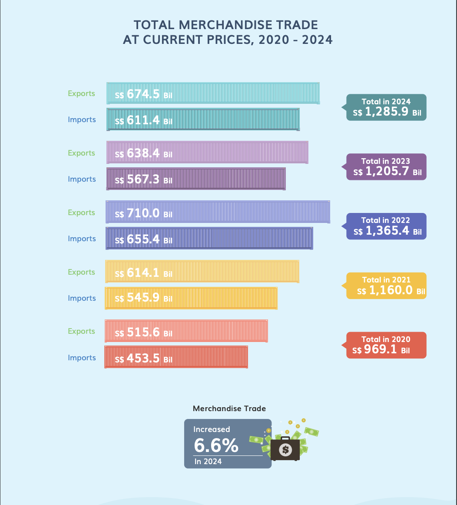
| Pros | Cons |
|---|---|
|
|
3.1.2 Import Data
In this visualization, we will use the data Merchandise Trade by Region/Market from Department of Statistics Singapore, DOS website. The below code chunk can help us to import data.
library(readxl)
import <- read_excel("data/Trade.xlsx", sheet="T1", skip = 10)
do_export <- read_excel("data/Trade.xlsx", sheet="T2", skip = 10)
re_export <- read_excel("data/Trade.xlsx", sheet="T3", skip = 10)3.1.3 Data Preparation
Before we start the makeover, we need to combine the import-total trade data by month into import-total trade data by year. The code chunk below can help us.
Total Imports by year
colnames(import)[1] <- "Country/Region"
import_total <- import %>%
filter(`Country/Region` == "Total All Markets")
import_total <- import_total %>%
pivot_longer(-`Country/Region`, names_to = "Year", values_to = "Total_Trade_Import")
import_total <- import_total %>%
mutate(Year = as.numeric(str_extract(Year, "\\d{4}")))
import_total <- import_total %>%
mutate(Total_Trade_Import = as.numeric(Total_Trade_Import))
import_summary <- import_total %>%
group_by(Year) %>%
summarise(Total_Trade_Import = sum(Total_Trade_Import, na.rm = TRUE)) %>%
arrange(desc(Year))
print(import_summary)# A tibble: 23 × 2
Year Total_Trade_Import
<dbl> <dbl>
1 2025 54746.
2 2024 611360.
3 2023 567319.
4 2022 655436
5 2021 545882.
6 2020 453467.
7 2019 489712.
8 2018 500194.
9 2017 452101.
10 2016 403305.
# ℹ 13 more rowsTotal Domestic Exports by year
colnames(do_export)[1] <- "Country/Region"
do_export_total <- do_export %>%
filter(`Country/Region` == "Total All Markets")
do_export_total <- do_export_total %>%
pivot_longer(-`Country/Region`, names_to = "Year", values_to = "Total_Trade_do_Export")
do_export_total <- do_export_total %>%
mutate(Year = as.numeric(str_extract(Year, "\\d{4}")))
do_export_total <- do_export_total %>%
mutate(Total_Trade_do_Export = as.numeric(Total_Trade_do_Export))
do_export_summary <- do_export_total %>%
group_by(Year) %>%
summarise(Total_Trade_do_Export = sum(Total_Trade_do_Export, na.rm = TRUE)) %>%
arrange(desc(Year))
print(do_export_summary)# A tibble: 23 × 2
Year Total_Trade_do_Export
<dbl> <dbl>
1 2025 24672
2 2024 286598.
3 2023 285053.
4 2022 329669.
5 2021 278975.
6 2020 234450.
7 2019 251594.
8 2018 281138.
9 2017 259302.
10 2016 223933.
# ℹ 13 more rowsTotal Re-Exports by year
colnames(re_export)[1] <- "Country/Region"
re_export_total <- re_export %>%
filter(`Country/Region` == "Total All Markets")
re_export_total <- re_export_total %>%
pivot_longer(-`Country/Region`, names_to = "Year", values_to = "Total_Trade_re_Export")
re_export_total <- re_export_total %>%
mutate(Year = as.numeric(str_extract(Year, "\\d{4}")))
re_export_total <- re_export_total %>%
mutate(Total_Trade_re_Export = as.numeric(Total_Trade_re_Export))
re_export_summary <- re_export_total %>%
group_by(Year) %>%
summarise(Total_Trade_re_Export = sum(Total_Trade_re_Export, na.rm = TRUE)) %>%
arrange(desc(Year))
print(re_export_summary)# A tibble: 23 × 2
Year Total_Trade_re_Export
<dbl> <dbl>
1 2025 34736.
2 2024 387907.
3 2023 353351.
4 2022 380298.
5 2021 335106.
6 2020 281195.
7 2019 280921.
8 2018 274527.
9 2017 255699.
10 2016 242978.
# ℹ 13 more rowsTotal Exports by year
total_export_summary <- re_export_summary %>%
left_join(do_export_summary, by = "Year") %>%
mutate(Total_Trade_Export = Total_Trade_do_Export + Total_Trade_re_Export) %>%
select(Year, Total_Trade_Export)
print(total_export_summary)# A tibble: 23 × 2
Year Total_Trade_Export
<dbl> <dbl>
1 2025 59408.
2 2024 674505
3 2023 638403.
4 2022 709967.
5 2021 614081
6 2020 515645.
7 2019 532514.
8 2018 555665.
9 2017 515001.
10 2016 466912.
# ℹ 13 more rowsAt the end, we will combine the total import and total export into one dataset called trade_balance, and also calculate the trade balance and trade status.
trade_balance <- import_summary %>%
left_join(total_export_summary, by = "Year") %>%
mutate(
Trade_Balance = Total_Trade_Export - Total_Trade_Import,
Trade_Status = ifelse(Trade_Balance > 0, "Surplus", "Deficit")
) %>%
arrange(desc(Year))
print(trade_balance)# A tibble: 23 × 5
Year Total_Trade_Import Total_Trade_Export Trade_Balance Trade_Status
<dbl> <dbl> <dbl> <dbl> <chr>
1 2025 54746. 59408. 4661. Surplus
2 2024 611360. 674505 63145. Surplus
3 2023 567319. 638403. 71084. Surplus
4 2022 655436 709967. 54531. Surplus
5 2021 545882. 614081 68199. Surplus
6 2020 453467. 515645. 62177. Surplus
7 2019 489712. 532514. 42802. Surplus
8 2018 500194. 555665. 55471. Surplus
9 2017 452101. 515001. 62899. Surplus
10 2016 403305. 466912. 63607. Surplus
# ℹ 13 more rows3.1.4 Make-Over of Data visualization 1
First, calculate the total trade, trade balance, and trade status. The code below will help us.
trade_balance <- import_summary %>%
left_join(total_export_summary, by = "Year") %>%
mutate(
Total_Trade = Total_Trade_Import + Total_Trade_Export,
Trade_Balance = Total_Trade_Export - Total_Trade_Import,
Trade_Status = ifelse(Trade_Balance > 0, "Surplus", "Deficit")
) %>%
arrange(desc(Year))
print(trade_balance)# A tibble: 23 × 6
Year Total_Trade_Import Total_Trade_Export Total_Trade Trade_Balance
<dbl> <dbl> <dbl> <dbl> <dbl>
1 2025 54746. 59408. 114154 4661.
2 2024 611360. 674505 1285864. 63145.
3 2023 567319. 638403. 1205723. 71084.
4 2022 655436 709967. 1365403. 54531.
5 2021 545882. 614081 1159963. 68199.
6 2020 453467. 515645. 969112. 62177.
7 2019 489712. 532514. 1022226. 42802.
8 2018 500194. 555665. 1055859. 55471.
9 2017 452101. 515001. 967102. 62899.
10 2016 403305. 466912. 870216 63607.
# ℹ 13 more rows
# ℹ 1 more variable: Trade_Status <chr>Second, use ggplot2 and other packages to create the graph.
trade_data <- trade_balance %>%
filter(Year >= 2020 & Year <= 2024) %>%
pivot_longer(cols = c(Total_Trade_Import, Total_Trade_Export),
names_to = "Trade_Type", values_to = "Trade_Value")
p <- ggplot(trade_data, aes(x = Trade_Value, y = factor(Year), fill = Trade_Type,
text = paste("Year:", Year,
"<br>Trade Type:", Trade_Type,
"<br>Trade Value: S$", round(Trade_Value / 1e3, 1), "B",
"<br>Trade Balance: S$", round(Trade_Balance / 1e3, 1), "B",
"<br>Trade Status:", Trade_Status))) +
geom_col(position = "dodge", width = 0.6) +
geom_text(data = trade_data %>% filter(Trade_Type == "Total_Trade_Export"),
aes(x = max(Trade_Value) * 1.15, y = factor(Year),
label = paste0("Total: S$", round(Total_Trade / 1e3, 1), "B")),
hjust = -0.3, size = 3, color = "purple") +
scale_fill_manual(values = c("Total_Trade_Import" = "#E69F00", "Total_Trade_Export" = "#56B4E9")) +
labs(title = "Total Merchandise Trade (2020-2024) with Trade Balance",
x = "Trade Value (Billion S$)", y = "", fill = "Trade Type") +
theme_minimal() +
theme(legend.position = "top",
plot.margin = margin(10, 250, 10, 10))
p_interactive <- ggplotly(p, tooltip = "text") %>%
layout(margin = list(r = 250))
p_interactive
Improvement
1. Addition of Trade Surplus and Deficit Information
- The new chart explicitly shows the trade status and balance for each year in purple text, allowing users to quickly determine whether a year had a surplus or deficit. This makes it much easier to assess the overall trade performance.
2. Enhanced Interactivity for Better Data Understanding
- The updated version incorporates interactive elements, enabling users to explore trade data more effectively. This helps in identifying patterns, trends, and year-on-year changes in a more intuitive way.
3.1.5 Findings
1. Trade Trend Analysis
Observing trade changes from 2020 to 2024, both imports (Total_Trade_Import) and exports (Total_Trade_Export) show a steady growth trend.
The total trade value in 2020 is significantly lower than in the following years, likely due to the impact of the pandemic, causing trade to shrink before gradually recovering.
2. Import-Export Differences (Trade Balance)
- The chart indicates that exports (blue bars) exceed imports (orange bars) in all years, meaning the country consistently maintains a trade surplus.
3.2 Data Visualization 2
3.2.1 Pros and cons
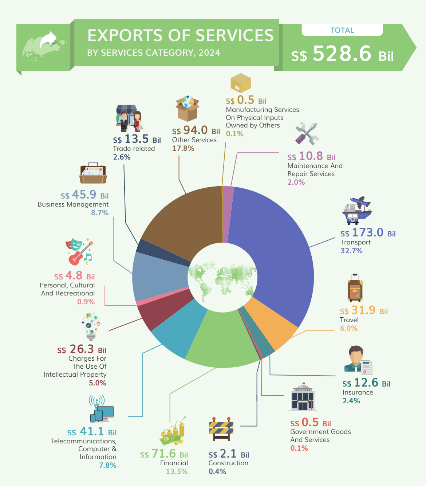
| Pros | Cons |
|---|---|
|
|
3.2.2 Import Data
In this visualization, we will use the data Trade In Services By Services Category, Annual from Department of Statistics Singapore, DOS website. The below code chunk can help us to import data.
library(readxl)
exports_by_services <- read_excel("data/Exports_by_services.xlsx",skip = 10)3.2.3 Data Preparation
Before we start the data visualization, we need to aggregate the exports of services-total trade data from a monthly level to a yearly level. The code chunk below facilitates this process by summing the trade values for 2024.
export_start <- which(exports_by_services$`Data Series` == "Exports Of Services")
export_end <- which(exports_by_services$`Data Series` == "Other Business Services")
exports_filtered <- exports_by_services %>%
slice((export_start):(export_end)) %>%
select(`Data Series`, `2024`)
colnames(exports_filtered) <- c("Category", "Value_2024")
exports_filtered <- exports_filtered %>%
mutate(Value_2024 = as.numeric(Value_2024),
Value_2024_Billion = round(Value_2024 / 1e3, 1))
print(exports_filtered)# A tibble: 15 × 3
Category Value_2024 Value_2024_Billion
<chr> <dbl> <dbl>
1 Exports Of Services 528568. 529.
2 Manufacturing Services On Physical Inputs Owne… 471 0.5
3 Maintenance And Repair Services 10820. 10.8
4 Transport 172971. 173
5 Freight 145993. 146
6 Others 26978. 27
7 Travel 31867. 31.9
8 Insurance 12650. 12.6
9 Government Goods And Services 477. 0.5
10 Construction 2101. 2.1
11 Financial 71583. 71.6
12 Telecommunications, Computer & Information 41150. 41.1
13 Charges For The Use Of Intellectual Property 26256. 26.3
14 Personal, Cultural And Recreational 4831 4.8
15 Other Business Services 153392. 153. 3.2.4 Make-over of Data Visualization 2
Use ggplot2 and other packages to create the graph.
exports_filtered_plot <- exports_filtered %>%
filter(Category != "Exports Of Services")
exports_total <- exports_filtered %>%
filter(Category == "Exports Of Services") %>%
pull(Value_2024_Billion)
exports_filtered_plot <- exports_filtered_plot %>%
mutate(Percentage = round((Value_2024_Billion / exports_total) * 100, 1))
p2 <- ggplot(exports_filtered_plot, aes(x = Value_2024_Billion, y = reorder(Category, Value_2024_Billion))) +
geom_col(fill = "steelblue") +
labs(
title = "Exports of Services by Category (2024)",
x = "Value (Billion S$)",
y = ""
) +
theme_minimal() +
theme(
text = element_text(size = 14),
axis.text.x = element_text(size = 12),
axis.text.y = element_text(angle = 30, hjust = 1, size= 8)
)
p2_interactive <- ggplotly(p2, tooltip = c("x", "y")) %>%
layout(
hoverlabel = list(bgcolor = "black", font = list(color = "white"))
) %>%
style(
text = paste(
"Type:", exports_filtered_plot$Category,
"<br>Value:", exports_filtered_plot$Value_2024_Billion, "Billion",
"<br>Percentage:", exports_filtered_plot$Percentage, "%"
),
hoverinfo = "text"
)
p2_interactive
Improvement
1. Switched from a Pie Chart to a Bar Chart
- The previous pie chart made it difficult to compare categories, especially when values were similar. The new bar chart improves readability by presenting the data in a clear, ranked format, making it easier to identify the top and bottom categories at a glance.
2. Enhanced Interactivity for Better Data Understanding
- The updated version incorporates interactive elements such as tooltips, hover effects. These enhancements allow users to explore trade data more effectively, making it easier to compare categories.
3.2.5 Findings
1. Dominance of Transport and Business Services
- The chart indicates that “Transport” and “Other Business Services” are the two largest contributors to service exports in 2024, each exceeding 100 billion S$. This suggests that these sectors play a crucial role in the country’s service economy.
2. Large Disparity Between Categories
- The top three categories contribute significantly more than others, with lower-ranked services like “Government Goods and Services” adding minimal value.
3. Potential for Smaller Sectors
- Categories like “Personal, Cultural, and Recreational Services” and “Maintenance and Repair Services” have low exports but may present growth opportunities.
3.3 Data Visualization 3
3.3.1 Pros and cons
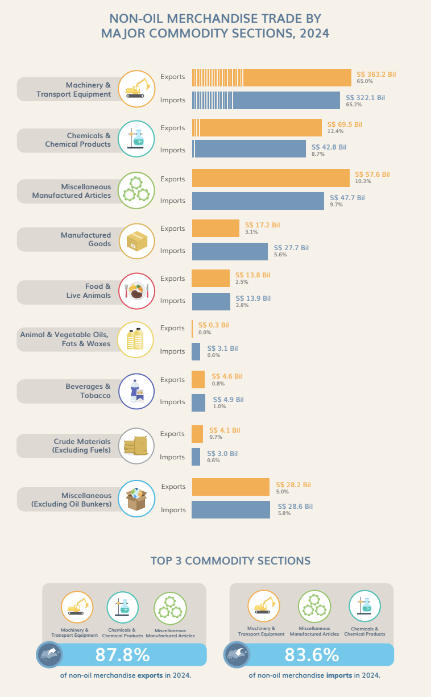
| Pros | Cons |
|---|---|
|
|
3.3.2 Import Data
In this visualization, we will use the data Merchandise Trade By Commodity Section, (At Current Prices) from Department of Statistics Singapore, DOS website. The below code chunk can help us to import data.
library(readxl)
non_oil <- read_excel("data/Non-oil.xlsx",skip = 10)3.3.3 Data Preparation
First, we will select the import data for the category of non-oil merchandise trade by major commodity sections in 2024 on a monthly basis, and then sum them yearly.
non_import_start <- which(non_oil$`Data Series` == "Total Merchandise Imports, (At Current Prices)")
non_import_end <- which(non_oil$`Data Series` == "Total Merchandise Exports, (At Current Prices)")
non_import_filtered <- non_oil %>%
slice((non_import_start+4):(non_import_end-1)) %>%
select(`Data Series`, contains("2024")) %>%
mutate(Value_2024 = rowSums(across(-`Data Series`), na.rm = TRUE)) %>%
select(`Data Series`, Value_2024)
colnames(non_import_filtered) <- c("Category", "Value_2024_Import")
non_import_filtered <- non_import_filtered %>%
mutate(Value_2024_Import = as.numeric(Value_2024_Import),
Value_2024_Billion_Import = round(Value_2024_Import / 1e6, 1))
print(non_import_filtered)# A tibble: 9 × 3
Category Value_2024_Import Value_2024_Billion_I…¹
<chr> <dbl> <dbl>
1 Food & Live Animals 13864241. 13.9
2 Beverages & Tobacco 4879537. 4.9
3 Crude Materials (Excl Fuels) 3038816. 3
4 Animal & Vegetable Oils Fats & Waxes 3098804. 3.1
5 Chemicals & Chemical Products 42766218. 42.8
6 Manufactured Goods 27735050. 27.7
7 Machinery & Transport Equipment 322073528. 322.
8 Miscellaneous Manufactured Articles 47710175 47.7
9 Miscellaneous (Excluding Oil Bunkers) 28569546. 28.6
# ℹ abbreviated name: ¹Value_2024_Billion_ImportNext, we will select the export data for the category of non-oil merchandise trade by major commodity sections in 2024 on a monthly basis, and then sum them yearly.
non_export_start <- which(non_oil$`Data Series` == "Total Merchandise Exports, (At Current Prices)")
non_export_end <- which(non_oil$`Data Series` == "Total Domestic Exports, (At Current Prices)")
non_export_filtered <- non_oil %>%
slice((non_export_start+5):(non_export_end-1)) %>%
select(`Data Series`, contains("2024")) %>%
mutate(Value_2024 = rowSums(across(-`Data Series`), na.rm = TRUE)) %>%
select(`Data Series`, Value_2024)
colnames(non_export_filtered) <- c("Category", "Value_2024_Export")
non_export_filtered <- non_export_filtered %>%
mutate(Value_2024_Export = as.numeric(Value_2024_Export),
Value_2024_Billion_Export = round(Value_2024_Export / 1e6, 1))
print(non_export_filtered)# A tibble: 9 × 3
Category Value_2024_Export Value_2024_Billion_E…¹
<chr> <dbl> <dbl>
1 Food & Live Animals 13785435. 13.8
2 Beverages & Tobacco 4600202. 4.6
3 Crude Materials (Excl Fuels) 4149311. 4.1
4 Animal & Vegetable Oils Fats & Waxes 271570. 0.3
5 Chemicals & Chemical Products 69516959. 69.5
6 Manufactured Goods 17218137 17.2
7 Machinery & Transport Equipment 363221996. 363.
8 Miscellaneous Manufactured Articles 57567092. 57.6
9 Miscellaneous (Excluding Oil Bunkers) 28155313. 28.2
# ℹ abbreviated name: ¹Value_2024_Billion_ExportAt the end, we will combine the import and export data into one dataset called non_oil_trade, and also calculate the trade balance and trade status.
non_oil_trade <- full_join(non_import_filtered, non_export_filtered, by = "Category") %>%
mutate(
Trade_Balance = Value_2024_Export - Value_2024_Import,
Trade_Balance_Billion = round(Trade_Balance / 1e6, 1),
Trade_Status = case_when(
Trade_Balance > 0 ~ "Trade Surplus",
Trade_Balance < 0 ~ "Trade Deficit",
TRUE ~ "Balanced Trade"
)
)
print(non_oil_trade)# A tibble: 9 × 8
Category Value_2024_Import Value_2024_Billion_I…¹ Value_2024_Export
<chr> <dbl> <dbl> <dbl>
1 Food & Live Animals 13864241. 13.9 13785435.
2 Beverages & Tobacco 4879537. 4.9 4600202.
3 Crude Materials (E… 3038816. 3 4149311.
4 Animal & Vegetable… 3098804. 3.1 271570.
5 Chemicals & Chemic… 42766218. 42.8 69516959.
6 Manufactured Goods 27735050. 27.7 17218137
7 Machinery & Transp… 322073528. 322. 363221996.
8 Miscellaneous Manu… 47710175 47.7 57567092.
9 Miscellaneous (Exc… 28569546. 28.6 28155313.
# ℹ abbreviated name: ¹Value_2024_Billion_Import
# ℹ 4 more variables: Value_2024_Billion_Export <dbl>, Trade_Balance <dbl>,
# Trade_Balance_Billion <dbl>, Trade_Status <chr>3.3.4 Make-Over of Data visualization 3
p <- ggplot(non_oil_trade, aes(y = reorder(Category, Value_2024_Billion_Export), text = paste(
"Category: ", Category, "<br>",
"Export: S$", Value_2024_Billion_Export, "B<br>",
"Import: S$", Value_2024_Billion_Import, "B<br>",
"Trade Balance: S$", Trade_Balance_Billion, "B<br>",
"Status: ", Trade_Status
))) +
geom_bar(aes(x = Value_2024_Billion_Export, fill = "Export"), stat = "identity", position = "dodge", width = 0.6) +
geom_bar(aes(x = -Value_2024_Billion_Import, fill = "Import"), stat = "identity", position = "dodge", width = 0.6) +
scale_fill_manual(values = c("Export" = "#F4A261", "Import" = "#2A9D8F"),
labels = c("Export", "Import")) +
geom_point(aes(x = Trade_Balance_Billion, color = Trade_Status), size = 4) +
scale_color_manual(values = c("Trade Surplus" = "blue", "Trade Deficit" = "red"),
labels = c("Trade Surplus", "Trade Deficit")) +
labs(title = "Non-Oil Merchandise Trade by Major Commodity Sections, 2024",
x = "Trade Value (Billion S$)",
y = "",
fill = "Trade Type",
color = "Trade Status") +
theme_minimal() +
theme(
legend.position = "bottom",
legend.title = element_text(size = 12),
legend.text = element_text(size = 10),
axis.text.y = element_text(size = 8, angle = 30),
axis.text.x = element_text(size = 12),
plot.title = element_text(size = 14, face = "bold", hjust = 0.5))
p_interactive <- ggplotly(p, tooltip = "text")
p_interactive
Improvement
1. Clear Representation of Trade Surplus and Deficit
- The new chart includes visual markers (red for trade deficit and blue for trade surplus), making it easier to identify which categories contribute positively or negatively to the trade balance.
2. Better Proportional Representation
- The updated version properly scales the bars, ensuring a more accurate comparison of trade values across different categories.
3. Enhanced Interactivity for Better Data Exploration
- The new version incorporates interactive elements (e.g., hover effects, tooltips, and filtering options), allowing users to explore specific trade categories more easily.
3.3.5 Findings
1. Trade Surplus vs. Trade Deficit Analysis
Categories like Machinery & Transport Equipment and Chemicals & Chemical Products show a trade surplus, indicating that exports exceed imports in these sectors.
On the other hand, categories such as Food & Live Animals and Crude Materials (Excl. Fuels) experience a trade deficit, where imports are higher than exports.
2. Disproportionate Trade Volume Across Categories
The Machinery & Transport Equipment sector has the highest trade volume, both in imports and exports, making it a key contributor to overall trade.
Sectors like Animal & Vegetable Oils, Fats & Waxes have minimal trade activity, reflecting either lower demand or lower production in these areas.
4. Time-series analysis
4.1 Getting Started
For the purpose of this analysis, the following R packages will be used.
pacman::p_load(tidyverse, tsibble, feasts, fable, seasonal)4.1.2 Importing the data
First, read_excel of readxl package is used to import Trade.xlsx file into R environment. The imported file is saved an tibble object called ts_data.
library(readxl)
ts_data <- read_excel(
"data/Trade.xlsx", sheet="T4")In the code chunk below, parse_date_time is used to convert data type of Month-Year field from Character to Date.
ts_data$`Data Series` <- parse_date_time(ts_data$`Data Series`, orders = "Y b")
head(ts_data)# A tibble: 6 × 161
`Data Series` `Total All Markets` America `Antigua And Barbuda`
<dttm> <dbl> <dbl> <dbl>
1 2025-01-01 00:00:00 54746. 6923. 0
2 2024-12-01 00:00:00 56136. 7874. 0
3 2024-11-01 00:00:00 51802. 7880. 0
4 2024-10-01 00:00:00 51416. 8078. 0
5 2024-09-01 00:00:00 49068. 9112 0
6 2024-08-01 00:00:00 49949 8581. 0
# ℹ 157 more variables: Argentina <dbl>, Bahamas <dbl>, Bermuda <dbl>,
# Brazil <dbl>, Canada <dbl>, Chile <dbl>, Colombia <dbl>,
# `Costa Rica` <dbl>, Cuba <dbl>, `Dominican Rep` <dbl>, Ecuador <dbl>,
# `El Salvador` <dbl>, Guatemala <dbl>, Guyana <dbl>, Honduras <dbl>,
# Jamaica <dbl>, Mexico <dbl>, `Netherlands Antilles` <dbl>, Panama <dbl>,
# Paraguay <dbl>, Peru <dbl>, `Puerto Rico` <dbl>,
# `St. Vincent And The Grenadines` <dbl>, `Trinidad And Tobago` <dbl>, …4.1.3 Conventional base ts object versus tibble object
tibble object
ts_data# A tibble: 265 × 161
`Data Series` `Total All Markets` America `Antigua And Barbuda`
<dttm> <dbl> <dbl> <dbl>
1 2025-01-01 00:00:00 54746. 6923. 0
2 2024-12-01 00:00:00 56136. 7874. 0
3 2024-11-01 00:00:00 51802. 7880. 0
4 2024-10-01 00:00:00 51416. 8078. 0
5 2024-09-01 00:00:00 49068. 9112 0
6 2024-08-01 00:00:00 49949 8581. 0
7 2024-07-01 00:00:00 52965. 8462 0
8 2024-06-01 00:00:00 48846. 7611. 0
9 2024-05-01 00:00:00 52681. 8388 0
10 2024-04-01 00:00:00 52901 8972. 0
# ℹ 255 more rows
# ℹ 157 more variables: Argentina <dbl>, Bahamas <dbl>, Bermuda <dbl>,
# Brazil <dbl>, Canada <dbl>, Chile <dbl>, Colombia <dbl>,
# `Costa Rica` <dbl>, Cuba <dbl>, `Dominican Rep` <dbl>, Ecuador <dbl>,
# `El Salvador` <dbl>, Guatemala <dbl>, Guyana <dbl>, Honduras <dbl>,
# Jamaica <dbl>, Mexico <dbl>, `Netherlands Antilles` <dbl>, Panama <dbl>,
# Paraguay <dbl>, Peru <dbl>, `Puerto Rico` <dbl>, …4.1.4 Conventional base ts object versus tibble object
ts object
ts_data_ts <- ts(ts_data)
head(ts_data_ts) Data Series Total All Markets America Antigua And Barbuda Argentina
[1,] 1735689600 54746.4 6923.3 0 4.0
[2,] 1733011200 56135.9 7873.7 0 12.5
[3,] 1730419200 51802.1 7879.6 0 116.2
[4,] 1727740800 51415.6 8077.6 0 4.1
[5,] 1725148800 49068.4 9112.0 0 8.1
[6,] 1722470400 49949.0 8581.4 0 7.2
Bahamas Bermuda Brazil Canada Chile Colombia Costa Rica Cuba Dominican Rep
[1,] 0.0 0 870.2 267.5 12.6 17.6 40.0 0.6 5.7
[2,] 8.1 0 586.8 212.7 5.7 19.4 72.5 0.8 6.1
[3,] 0.0 0 942.4 221.6 8.0 9.2 70.2 1.3 5.9
[4,] 0.0 0 639.9 323.8 7.1 2.4 58.0 0.8 7.4
[5,] 0.0 0 786.6 236.5 2.3 3.3 50.1 1.0 7.4
[6,] 0.0 0 550.6 224.4 5.0 5.7 59.9 0.5 7.8
Ecuador El Salvador Guatemala Guyana Honduras Jamaica Mexico
[1,] 15.2 1.2 0.2 0.3 0.9 0.1 267.6
[2,] 8.8 2.5 0.3 0.0 0.5 0.1 263.7
[3,] 7.7 1.2 0.3 0.1 0.3 0.0 426.6
[4,] 9.7 1.4 1.3 0.3 1.0 0.1 897.9
[5,] 3.7 1.5 0.9 0.1 0.3 0.1 1486.9
[6,] 8.7 1.5 1.1 0.2 0.3 0.1 394.2
Netherlands Antilles Panama Paraguay Peru Puerto Rico
[1,] 0 0.3 0.3 9.4 15.9
[2,] 0 0.3 0.7 8.1 10.2
[3,] 0 0.1 0.4 18.3 9.8
[4,] 0 0.3 0.4 14.6 9.7
[5,] 0 43.7 0.7 1.8 7.4
[6,] 0 0.4 0.2 2.6 8.8
St. Vincent And The Grenadines Trinidad And Tobago United States
[1,] 0 1.3 5388.6
[2,] 0 0.1 6651.8
[3,] 0 49.6 5988.7
[4,] 0 0.0 6092.8
[5,] 0 1.9 6449.3
[6,] 0 41.8 7258.3
United States Virgin Islands Uruguay Venezuela Other Markets America
[1,] 0 2.7 0.0 0.8
[2,] 0 0.7 0.0 1.4
[3,] 0 0.9 0.0 0.7
[4,] 0 2.0 0.1 2.3
[5,] 0 17.4 0.0 1.0
[6,] 0 0.9 0.2 0.9
Asia Afghanistan Bahrain Bangladesh Brunei Cambodia China
[1,] 39520.8 0.0 86.0 16.3 205.5 87.8 6801.2
[2,] 39721.8 0.0 81.4 18.1 94.7 50.1 7168.0
[3,] 35194.8 0.0 2.1 16.6 93.7 120.3 6841.2
[4,] 34284.1 0.0 115.9 15.4 94.7 15.0 6070.1
[5,] 31828.7 0.0 23.0 27.3 83.9 26.6 5716.2
[6,] 32760.4 0.1 53.6 21.1 107.5 76.0 6249.9
Christmas Island Hong Kong India Indonesia Iran Iraq Israel Japan
[1,] 0.0 696.0 1098.7 1765.7 1.6 201.9 64.0 2600.1
[2,] 0.0 769.2 857.0 2006.9 4.0 459.2 76.6 2790.1
[3,] 0.0 442.4 909.9 1940.8 2.3 164.8 69.5 2879.8
[4,] 0.0 386.8 989.6 1973.1 1.0 203.8 83.2 2943.2
[5,] 0.1 476.6 774.4 1650.2 0.0 133.3 90.1 2381.9
[6,] 0.0 379.7 1047.1 1826.1 0.2 145.7 85.8 2377.9
Jordan Kazakhstan Korea, Dem Peo Rep Of Korea, Rep Of Kuwait Lao Lebanon
[1,] 2.9 12.8 0 3775.0 100.3 7.9 0.3
[2,] 5.4 7.6 0 3675.7 152.5 6.0 0.2
[3,] 4.9 26.9 0 2793.8 223.6 1.1 0.6
[4,] 4.0 0.0 0 3000.3 55.7 0.7 0.3
[5,] 2.2 0.7 0 3041.7 2.4 0.5 0.3
[6,] 5.9 0.0 0 2950.2 51.9 0.7 0.2
Macao Malaysia Maldives Mongolia Myanmar Nepal Oman Pakistan Philippines
[1,] 0.3 6445.1 0.1 0.0 4.3 0.3 140.6 58.6 539.6
[2,] 0.4 6569.9 3.9 0.0 5.5 0.1 41.4 17.3 654.4
[3,] 1.0 5778.2 3.6 0.0 8.7 0.5 39.1 6.4 496.0
[4,] 1.9 5574.0 0.5 0.1 7.0 0.8 66.4 56.5 462.4
[5,] 0.1 5462.0 0.1 0.2 10.3 0.6 37.1 19.0 458.0
[6,] 0.6 5234.6 0.4 0.0 6.4 0.2 94.5 44.0 451.9
Qatar Saudi Arabia Sri Lanka Syria Taiwan Thailand Turkiye
[1,] 507.1 658.1 10.0 0 10152.7 1139.7 96.2
[2,] 507.5 838.9 11.2 0 8847.7 1421.6 67.0
[3,] 441.7 973.2 12.9 0 7360.0 1228.3 41.0
[4,] 551.2 881.1 9.4 0 6976.4 1517.2 50.2
[5,] 460.4 507.6 8.7 0 7195.8 1250.2 98.4
[6,] 515.8 443.7 7.7 0 6813.1 1202.7 65.5
United Arab Emirates Viet Nam Yemen Other Markets Asia Europe Austria
[1,] 1340.2 794.0 0.0 109.7 6931.2 91.3
[2,] 1659.5 781.2 0.1 71.5 7373.9 77.4
[3,] 1538.8 717.1 0.3 13.6 7666.3 104.5
[4,] 1371.3 803.6 0.0 1.3 7204.6 100.8
[5,] 1193.1 694.4 0.3 1.2 6825.8 104.3
[6,] 1622.0 876.3 0.0 1.0 7162.9 89.6
Belarus Belgium Bulgaria Croatia Cyprus Czech Rep Denmark Estonia Finland
[1,] 3.1 191.5 5.1 1.9 3.1 126.9 134.6 29.6 41.0
[2,] 0.3 134.9 8.3 2.6 2.4 133.3 77.4 5.6 49.1
[3,] 3.3 132.9 10.2 2.2 5.4 100.8 105.5 26.4 29.9
[4,] 1.2 208.0 4.6 2.7 1.6 114.2 51.1 4.1 35.9
[5,] 6.2 101.0 4.4 3.2 1.5 228.1 66.1 31.9 46.7
[6,] 2.0 120.1 5.6 1.6 4.4 136.0 54.3 30.8 42.6
France Germany Greece Hungary Ireland Italy Latvia Lithuania Luxembourg
[1,] 1248.2 902.9 21.3 45.4 327.0 636.0 1.4 7.8 3.4
[2,] 1355.9 1108.3 43.7 56.7 449.3 633.1 2.0 9.3 3.0
[3,] 1549.4 1070.4 12.0 59.9 494.0 671.4 1.9 11.7 3.2
[4,] 1393.9 1103.5 13.3 48.3 199.9 644.9 3.8 10.8 1.4
[5,] 1325.7 1081.3 134.6 59.6 502.2 603.3 2.1 10.1 4.2
[6,] 1293.5 1163.3 96.1 48.0 302.6 597.7 1.8 11.2 2.8
Malta Netherlands Norway Poland Portugal Romania Russia Slovakia Slovenia
[1,] 10.9 294.2 78.1 80.0 32.3 31.3 494.8 10.6 8.5
[2,] 71.0 331.4 53.7 71.6 41.0 19.8 367.1 11.5 7.2
[3,] 13.4 274.5 66.6 75.8 34.5 24.8 432.5 12.1 9.3
[4,] 14.4 537.3 54.4 83.3 33.3 31.0 535.5 8.4 6.6
[5,] 28.8 270.6 42.7 78.9 32.5 26.4 186.2 10.6 7.3
[6,] 114.8 263.6 72.6 88.2 39.6 24.9 638.2 12.1 5.3
Spain Svalbard And Jan Mayen Islands Sweden Switzerland Ukraine
[1,] 113.3 0 132.8 725.1 3.2
[2,] 179.5 0 172.8 702.6 14.1
[3,] 351.7 0 123.9 684.6 11.4
[4,] 124.2 0 131.2 743.8 7.0
[5,] 153.5 0 147.8 571.3 3.2
[6,] 307.4 0 118.3 555.4 2.1
United Kingdom Other Markets Europe Oceania Antarctica Australia Fiji
[1,] 1086.5 8.1 666.1 0 574.5 0.6
[2,] 1166.6 11.6 751.8 0 671.1 0.4
[3,] 1146.9 9.2 404.5 0 338.7 0.2
[4,] 940.7 9.6 1097.3 0 1002.6 0.3
[5,] 942.5 6.9 566.9 0 449.6 0.8
[6,] 905.9 10.7 1003.6 0 909.9 0.1
French Polynesia Guam Marshall Islands New Caledonia New Zealand
[1,] 0.0 0.0 0 0.0 80.3
[2,] 2.5 0.0 0 0.4 60.0
[3,] 0.0 0.0 0 0.0 55.7
[4,] 0.0 1.0 0 0.5 64.9
[5,] 0.2 0.1 0 0.1 97.6
[6,] 0.1 0.0 0 0.1 71.2
Northern Mariana Islands Papua New Guinea Samoa Solomon Islands Vanuatu
[1,] 0.0 10.1 0.0 0.0 0.0
[2,] 0.0 15.5 0.0 0.1 0.1
[3,] 0.0 9.0 0.0 0.0 0.0
[4,] 0.0 27.7 0.0 0.0 0.0
[5,] 0.0 17.8 0.1 0.0 0.0
[6,] 0.5 20.8 0.0 0.0 0.0
Other Markets Oceania Africa Algeria Angola Benin Cameroon Cape Verde
[1,] 0.4 705.1 0.0 68.5 0 36.6 0.3
[2,] 1.7 414.7 19.7 0.0 0 15.0 0.0
[3,] 0.9 656.9 47.6 152.9 0 7.2 0.0
[4,] 0.3 751.9 117.5 0.5 0 16.5 0.2
[5,] 0.6 735.0 0.0 217.8 0 11.1 0.0
[6,] 0.9 440.6 17.6 0.0 0 7.3 0.0
Comoros Congo, Dem Rep Of Cote D'ivoire Djibouti Egypt Ethiopia Gabon
[1,] 0.0 20.2 5.5 0.8 82.8 8.2 0.0
[2,] 0.0 5.5 9.3 0.0 3.5 4.8 0.0
[3,] 0.0 1.5 12.4 0.5 37.5 11.8 0.0
[4,] 0.3 2.9 18.9 0.5 1.7 29.7 0.0
[5,] 1.2 0.1 12.4 0.0 24.8 6.3 0.0
[6,] 0.0 3.1 11.1 0.3 2.6 6.6 0.2
Ghana Guinea Kenya Liberia Libya Madagascar Mauritius Morocco Mozambique
[1,] 18.2 0 1.6 0 0 2.8 0.6 18.5 14.4
[2,] 12.8 0 1.3 0 0 2.2 1.0 23.9 89.0
[3,] 24.7 0 1.3 0 0 2.0 0.9 15.9 59.8
[4,] 14.0 0 0.8 0 0 0.5 0.7 15.3 130.6
[5,] 6.0 0 0.6 0 0 2.6 0.4 19.6 141.7
[6,] 6.9 0 0.8 0 0 1.0 0.4 18.4 59.9
Nigeria Reunion Seychelles Sierra Leone Somalia South Africa Sudan
[1,] 118.9 0.0 0.1 0.0 0 103.5 0.0
[2,] 72.3 0.0 0.1 0.0 0 40.1 0.0
[3,] 17.2 0.0 0.0 0.2 0 51.2 0.0
[4,] 183.7 0.2 0.1 0.0 0 88.1 42.4
[5,] 160.0 3.5 0.0 0.0 0 44.7 0.0
[6,] 132.5 0.0 0.3 0.0 0 45.1 0.0
Swaziland Tanzania Tunisia Zambia Zimbabwe Other Markets Africa
[1,] 0.1 1.8 12.0 18.8 1.5 169.1
[2,] 0.4 22.8 11.2 0.2 0.1 79.4
[3,] 0.0 4.1 12.0 23.6 1.2 171.4
[4,] 0.0 0.5 12.0 0.0 1.4 72.8
[5,] 0.1 1.2 7.1 0.2 1.9 71.4
[6,] 1.9 1.5 11.8 0.6 1.2 109.64.1.5 Converting tibble object to tsibble object
The code chunk below converting ts_data from tibble object into tsibble object by using as_tsibble() of tsibble R package.
ts_tsibble <- ts_data %>%
mutate(Month = yearmonth(`Data Series`)) %>%
as_tsibble(index = `Month`)4.1.6 tsibble object
ts_tsibble# A tsibble: 265 x 162 [1M]
`Data Series` `Total All Markets` America `Antigua And Barbuda`
<dttm> <dbl> <dbl> <dbl>
1 2003-01-01 00:00:00 18539. 2385. 0
2 2003-02-01 00:00:00 17163. 2755. 0
3 2003-03-01 00:00:00 20442. 3455. 0
4 2003-04-01 00:00:00 19325 2826. 0
5 2003-05-01 00:00:00 18136 2460. 0
6 2003-06-01 00:00:00 19774. 2853. 0
7 2003-07-01 00:00:00 19832. 2670. 0
8 2003-08-01 00:00:00 19534. 3088. 0
9 2003-09-01 00:00:00 20630. 3061. 0
10 2003-10-01 00:00:00 22247. 3430 0
# ℹ 255 more rows
# ℹ 158 more variables: Argentina <dbl>, Bahamas <dbl>, Bermuda <dbl>,
# Brazil <dbl>, Canada <dbl>, Chile <dbl>, Colombia <dbl>,
# `Costa Rica` <dbl>, Cuba <dbl>, `Dominican Rep` <dbl>, Ecuador <dbl>,
# `El Salvador` <dbl>, Guatemala <dbl>, Guyana <dbl>, Honduras <dbl>,
# Jamaica <dbl>, Mexico <dbl>, `Netherlands Antilles` <dbl>, Panama <dbl>,
# Paraguay <dbl>, Peru <dbl>, `Puerto Rico` <dbl>, …4.2 Visualising Time-series Data
In order to visualise the time-series data effectively, we need to organise the data frame from wide to long format by using pivot_longer() of tidyr package as shown below.
ts_longer <- ts_data %>%
pivot_longer(cols = c(2:34),
names_to = "Country",
values_to = "Trade")4.2.1 Visualising single time-series: ggplot2 methods
ts_longer %>%
filter(Country == "America") %>%
ggplot(aes(x = `Data Series`,
y = Trade))+
geom_line(size = 0.5)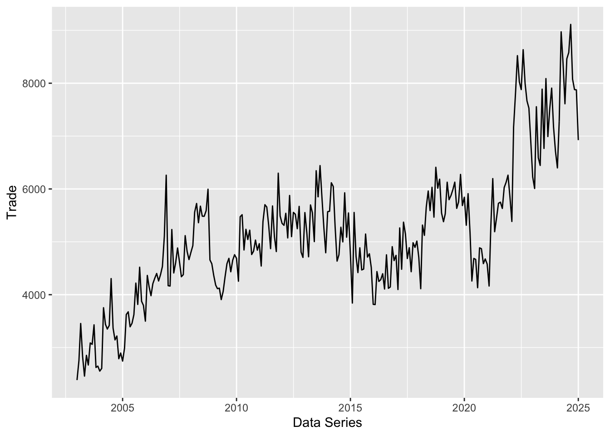
The time series plot illustrates the trend of trade from America over the years. The data reveals a general upward trajectory, with trade volumes increasing steadily from the early 2000s to 2025. However, there are noticeable fluctuations throughout the period, indicating potential economic cycles, trade policy changes, or global market conditions affecting the trade flow.
A significant surge in trade is observed after 2020, suggesting a strong post-pandemic economic recovery or an increase in trade agreements and exports. This rapid growth may be driven by factors such as supply chain normalization, increased global demand, or government stimulus measures. Towards the end of the timeline, there is a slight decline, which may indicate market corrections, trade restrictions, or economic slowdowns in key industries.
4.2.2 Plotting multiple time-series data with ggplot2 methods
ggplot(data = ts_longer,
aes(x = `Data Series`,
y = Trade,
color = Country))+
geom_line(size = 0.5) +
theme(legend.position = "bottom",
legend.box.spacing = unit(0.5, "cm"))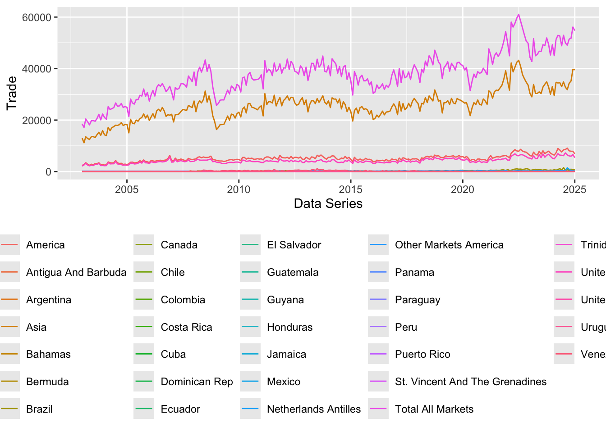
In order to provide effective comparison, facet_wrap() of ggplot2 package is used to create small multiple line graph also known as trellis plot.
ggplot(data = ts_longer,
aes(x = `Data Series`,
y = Trade))+
geom_line(size = 0.5) +
facet_wrap(~ Country,
ncol = 3,
scales = "free_y") +
theme_bw()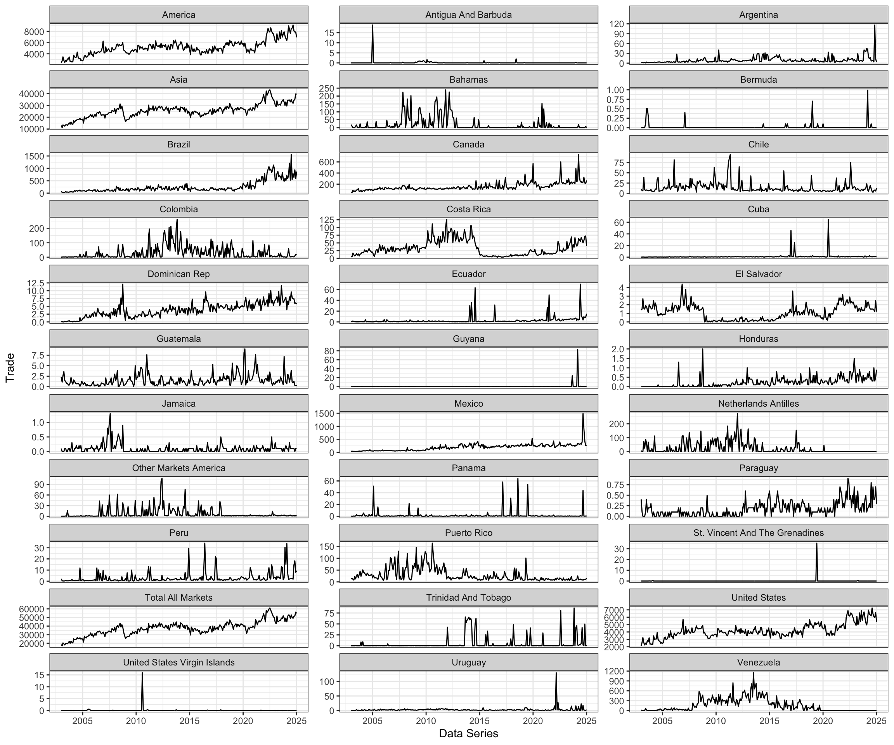
This visualization presents a comparative analysis of trade arrivals across multiple countries over time. Each panel represents a different country, showing how trade activity has evolved in distinct regions. Countries like America and Asia exhibit a steady upward trend, suggesting consistent growth in trade, while others, such as Antigua and Barbuda or Bermuda, show sporadic fluctuations with sharp peaks and troughs.
The use of individual scales for each country ensures better visibility of trade patterns, especially for countries with smaller trade volumes. Additionally, noticeable spikes in countries like Argentina, Mexico, and Ecuador may indicate periods of heightened trade activity, possibly influenced by economic factors or policy changes. This visualization helps in understanding regional trade dynamics and long-term economic trends.
4.3 Visual Analysis of Time-series Data
In order to visualise the time-series data effectively, we need to organise the data frame from wide to long format by using pivot_longer() of tidyr package as shown below.
tsibble_longer <- ts_tsibble %>%
pivot_longer(cols = c(2:34),
names_to = "Country",
values_to = "Trade")4.3.1 Visual Analysis of Seasonality with Cycle Plot
A cycle plot shows how a trend or cycle changes over time. We can use them to see seasonal patterns. Typically, a cycle plot shows a measure on the Y-axis and then shows a time period (such as months or seasons) along the X-axis. For each time period, there is a trend line across a number of years.
Figure below shows two time-series lines of visitor arrivals from America and Canada. Both lines reveal clear sign of seasonal patterns but not the trend.
tsibble_longer %>%
filter(Country == "America" |
Country == "Canada") %>%
autoplot(Trade) +
facet_grid(Country ~ ., scales = "free_y")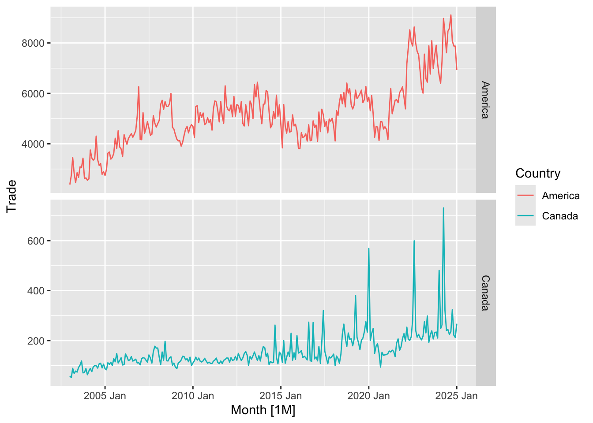
In the code chunk below, cycle plots using gg_subseries() of feasts package are created. Notice that the cycle plots show not only seasonal patterns but also trend.
tsibble_longer %>%
filter(Country == "America" |
Country == "Canada") %>%
gg_subseries(Trade)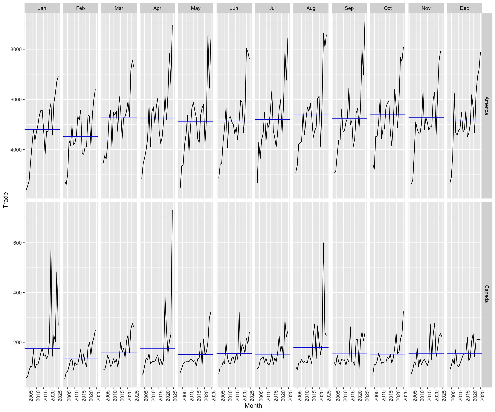
This visualization displays trade trends over time for two countries, America and Canada, segmented by month. The black lines represent monthly trade values, while the blue trend lines provide an indication of the overall trade trajectory.
For America, trade values are significantly higher, exhibiting strong fluctuations throughout the year with frequent spikes, suggesting periods of increased trade activity. In contrast, Canada’s trade values are much lower, but the pattern also shows gradual growth with occasional sharp peaks.
The month-wise facetting helps in identifying seasonal trends or periodic trade surges, allowing for a better understanding of how trade varies throughout the year in these two regions.
4.4 Time series decomposition
Multiple time-series decomposition
Code chunk below is used to prepare a trellis plot of ACFs for visitor arrivals from America, Canada, Brazil and Colombia.
tsibble_longer %>%
filter(`Country` == "America" |
`Country` == "Canada" |
`Country` == "Brazil" |
`Country` == "Colombia") %>%
ACF(Trade) %>%
autoplot()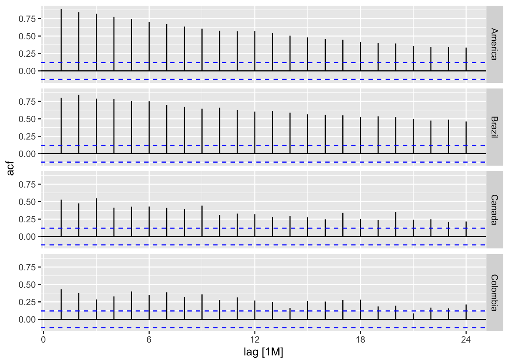
The autocorrelation function (ACF) plots for America, Brazil, Canada, and Colombia illustrate the correlation between current and past trade values over different time lags.
1. Strong Persistence in Trade Trends:
The ACF values remain high over multiple lags, particularly in America and Brazil, indicating that trade values exhibit strong temporal dependence. This suggests that past trade performance has a significant influence on future trade patterns, likely due to long-term contracts, stable market demands, or macroeconomic factors.
The gradual decline in autocorrelation over time suggests that while trade values remain correlated, the impact of past values weakens as the time lag increases.
2. Seasonal and Cyclical Patterns:
The recurring peaks in the ACF plots suggest a periodic pattern in trade activities, likely driven by seasonal fluctuations or economic cycles.
The presence of noticeable drops and rises in autocorrelation at regular intervals may indicate that certain trade sectors experience predictable demand and supply shifts throughout the year, such as increased exports during peak production seasons or import surges tied to market demands.
In contrast, Canada and Colombia show weaker autocorrelations beyond the first few lags, which may suggest more volatile or less structured trade patterns compared to America and Brazil.
Overall, these ACF plots highlight that trade dynamics are not random but instead follow structured trends influenced by past trade values, seasonality, and possibly external economic factors.
4.5 Visual STL Diagnostics
STL is a robust method of time series decomposition often used in economic and environmental analyses. The STL method uses locally fitted regression models to decompose a time series into trend, seasonal, and remainder components.
4.5.1 Visual STL diagnostics with feasts
In the code chunk below, STL() of feasts package is used to decomposite the trend of trade from America data.
tsibble_longer %>%
filter(`Country` == "America") %>%
model(stl = STL(Trade)) %>%
components() %>%
autoplot()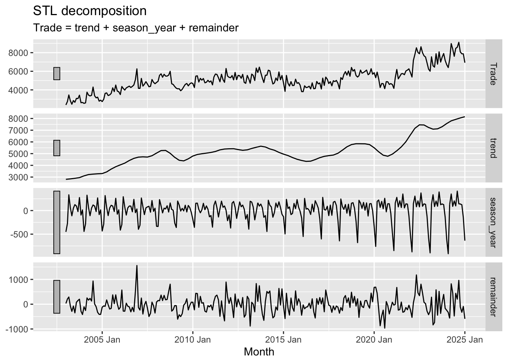
This STL decomposition plot breaks down trade data into three key components: trend, seasonality, and remainder.
1. Long-Term Trend:
- The trend component shows a general upward trajectory in trade over time, indicating steady growth. There are noticeable fluctuations, particularly around 2015 and 2020, where trade appears to experience temporary declines before resuming an upward movement. The recent trend suggests an acceleration in trade activity post-2020.
2. Seasonal Patterns:
- The seasonal component exhibits a recurring pattern with periodic peaks and troughs, suggesting that trade follows a predictable annual cycle. These fluctuations could be attributed to market demands, seasonal exports and imports, or economic cycles. The seasonality appears relatively stable, indicating that external shocks have not significantly disrupted these patterns.
3. Residual Variability:
- The remainder component captures short-term variations that cannot be explained by trend or seasonality. There are noticeable spikes, particularly around financial crises or external shocks. Increased volatility in recent years suggests that trade has become more unpredictable, possibly due to global economic uncertainties, policy changes, or market disruptions.
Overall, the decomposition highlights a strong upward trend in trade, stable seasonal effects, and increasing short-term fluctuations in recent years. This suggests that while trade is growing, it is also subject to periodic and external influences that cause temporary disruptions.
4.5.2 Classical Decomposition with feasts
In the code chunk below, classical_decomposition() of feasts package is used to decompose a time series into seasonal, trend and irregular components using moving averages. THe function is able to deal with both additive or multiplicative seasonal component.
tsibble_longer %>%
filter(`Country` == "America") %>%
model(
classical_decomposition(
Trade, type = "additive")) %>%
components() %>%
autoplot()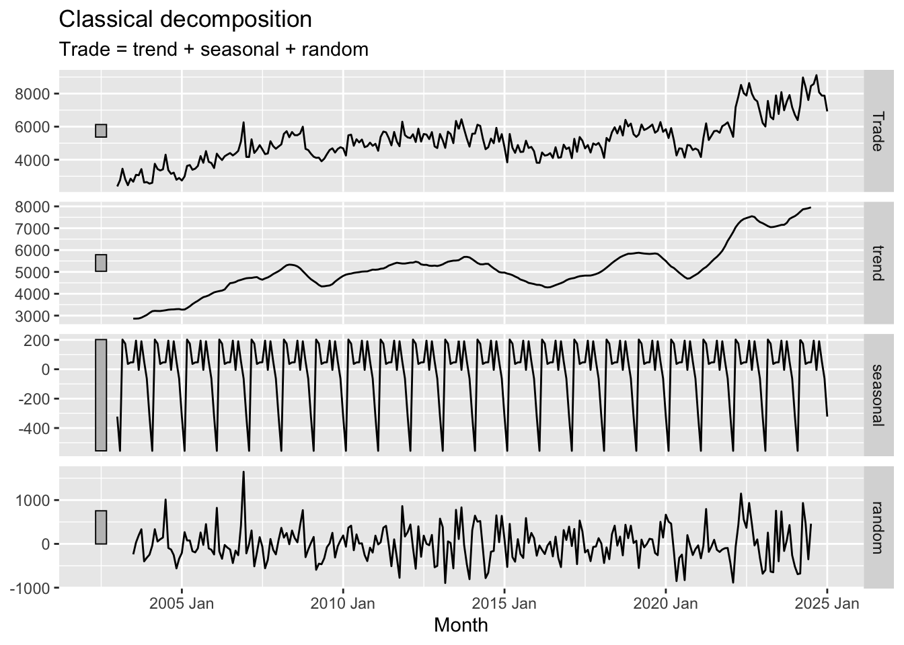
This classical decomposition plot dissects the trade data into three key components: trend, seasonality, and random fluctuations, offering a clearer view of underlying patterns.
1. Long-Term Trend:
- The trend component reveals a steady upward trajectory in trade over time, with noticeable periods of growth and decline. A slowdown is evident around 2015, followed by a strong recovery after 2020. This suggests that trade has been resilient despite economic fluctuations, rebounding after downturns.
2. Seasonal Variations:
- The seasonal component exhibits a consistent cyclical pattern, indicating that trade activity follows a regular, predictable annual rhythm. These recurring peaks and troughs suggest the presence of systematic seasonal effects, likely influenced by economic cycles, industry demands, or policy changes.
3. Unexplained Variability:
- The random component captures short-term variations that cannot be explained by trend or seasonality. Periods of high volatility are observed, particularly around financial crises and external shocks. Recent years show an increase in fluctuations, implying that trade has become more unpredictable, potentially due to economic uncertainty or external disruptions.
Overall, the decomposition highlights a strong long-term upward trend, stable seasonal effects, and periods of increased short-term volatility. This analysis helps distinguish systematic trade patterns from irregular shocks, providing valuable insights for economic forecasting and policy planning.
5. Conclusion
Through a detailed visual and statistical analysis of Singapore’s trade data, several key insights emerge. First, trade has exhibited a strong long-term growth trend, with significant fluctuations influenced by economic events such as financial crises and the COVID-19 pandemic. The introduction of trade surplus and deficit indicators in visualizations has improved clarity, making it easier to assess trade performance across different sectors.
The use of time-series analysis reveals distinct seasonal patterns, suggesting that trade volumes follow a predictable annual cycle, likely driven by global demand shifts and policy changes. Additionally, decomposition techniques highlight both the resilience of trade and the presence of short-term volatility, which may be linked to external shocks or market dynamics.
Overall, the enhanced visualizations and analytical methods provide a clearer, data-driven understanding of Singapore’s trade trends, allowing policymakers and stakeholders to make more informed decisions.